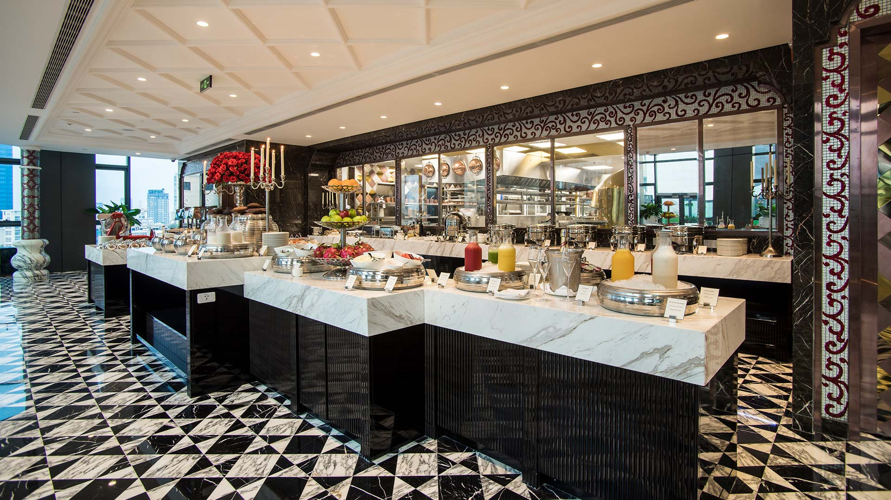

DASAN is known as the most luxurious hotel and the only member in Vietnam of the World Leading Hotels Organization.
We are determined to successfully build world-class hotel services so that DASAN Hotels becomes the leading hotel brand, reputable and position in the field of accommodation and resort services in Vietnam. And expand the scope of activities nationwide.
Create a new definition of hotel service quality in Ho Chi Minh City, Hanoi, Da Nang, Phan Thiet by providing the best services to customers. Turn DASAN hotel into a second home for guests staying. Thereby contributing to the economic development of the locality, through contributing to the budget, creating many job opportunities, building a civilized and professional working environment, improving the quality of people's lives labor and support community activities.
Possessing a proud position on the high floors of the famous Times
Square building in District 1 Saigon, the hotel offers world-class
services, exquisite Italian-style interior design and distinct luxury.
We are delighted to welcome you back to experience your luxurious stay
in the heart of Saigon. With professional services, modern facilities,
world-class cuisine and luxurious space, once again enjoy the moments of
complete rest at DASAN.
More than expected as a place of dazzling beauty and modernity, the
DASAN hotel is located on a high floor offering a stunning view of the
city that is second to none. There is only one Saigon, and only one
DASAN, unique in one of Southeast Asia's most dynamic and colorful
destinations. You have never seen or experienced anything like it in
Vietnam before… Staff who are young and beautiful, enthusiastic, caring
and professional with many years of experience in the hospitality
industry will certainly provide the most comfortable for you when
visiting the hotel.
In addition to Saigon, DASAN also has branches in Hanoi, Da Nang, and
Phan Thiet.